Sección de Damas
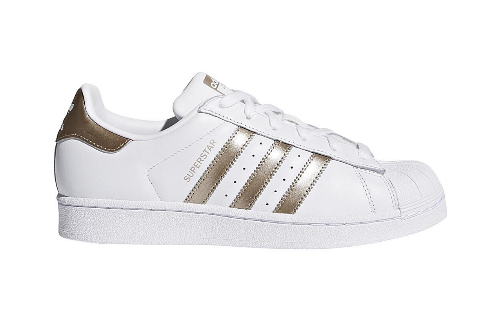
Adidas Blancos para Mujer
Estos zapatos Adidas blancos para mujer ofrecen un estilo clásico y limpio, perfecto para cualquier ocasión. Confeccionados con materiales de alta calidad, su diseño incluye el icónico logo en los laterales, aportando un toque distintivo. La suela acolchada brinda comodidad y soporte, ideal para un uso diario. Su versatilidad permite combinarlos fácilmente con looks casuales o deportivos, una opción esencial para quienes buscan comodidad en un solo calzado.
Comprar Ahora $26.99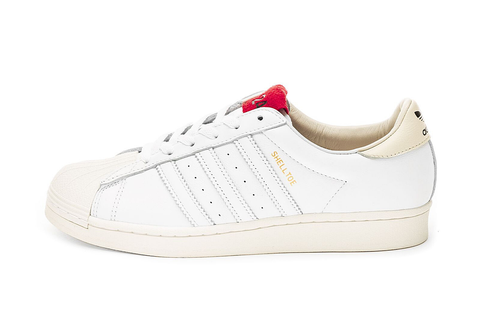
Zapatillas Blancas con Rosa
Estas zapatillas blancas con detalles en rosa son ideales para mujeres que buscan estilo y comodidad. Su diseño moderno combina una base blanca impecable con acentos en tonos rosados, aportando un toque femenino y fresco. Fabricadas con materiales de alta calidad, ofrecen una suela acolchada para mayor confort durante todo el día. Perfectas para combinar con looks casuales o deportivos, son versátiles y ligeras, ideales para cualquier ocasión.
Comprar Ahora $45.99
Zapatos Deportivos para Mujer
Estos zapatos deportivos negros para mujer combinan estilo y funcionalidad. Su diseño moderno y minimalista es perfecto para entrenamientos o uso diario. La parte superior ofrece transpirabilidad, mientras que la suela acolchada asegura comodidad en cada paso. Su color negro los hace fáciles de combinar con cualquier atuendo, aportando un look elegante y versátil. Perfectos para quienes buscan rendimiento y estilo en un solo par de zapatos.
Comprar Ahora $54.00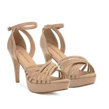
Sandalias Beige para Mujer
Sandalias beige para mujer, una opción elegante y versátil que complementa cualquier atuendo. Confeccionadas en un material suave y ligero, estas sandalias cuentan con tiras ajustables que ofrecen un ajuste personalizado y un soporte óptimo. La plantilla acolchada proporciona una comodidad excepcional, perfecta para largas jornadas. Además, la suela antideslizante garantiza estabilidad y seguridad en cada paso, ya sea que camines por la ciudad o disfrutes de un día en la playa. Su diseño atemporal las convierte en un básico que no puede faltar en tu armario. ¡Ideales para cualquier ocasión!
Comprar Ahora $39.99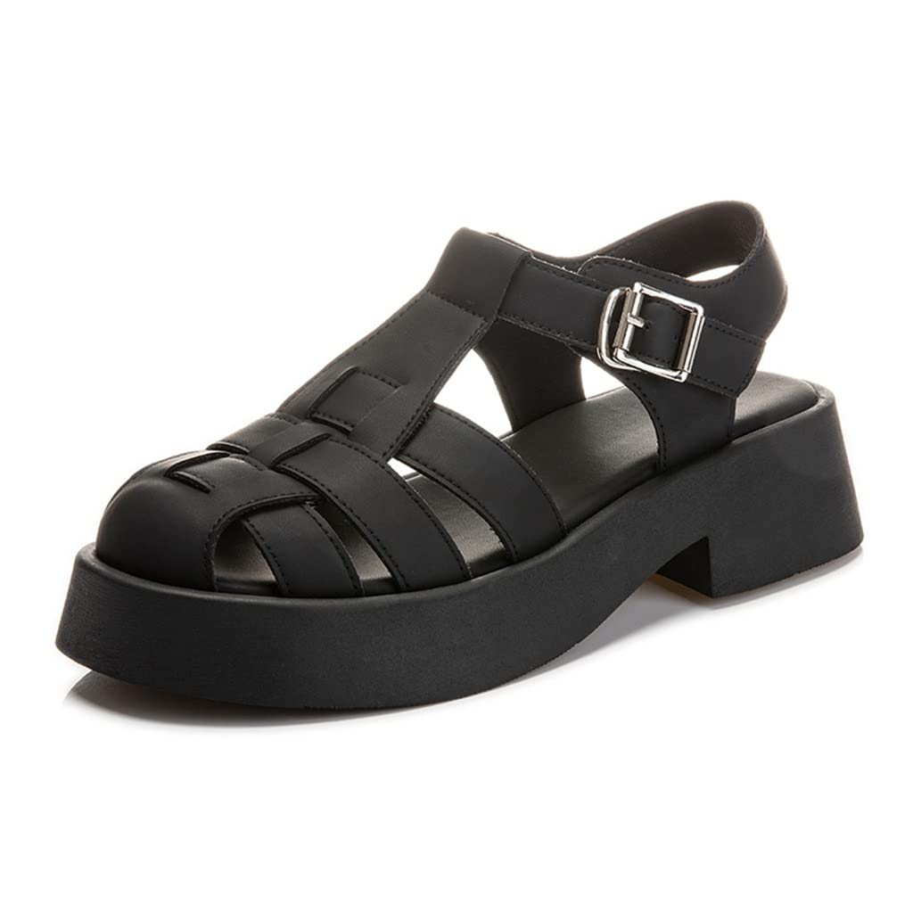
Sandalias Negras para Mujer
Estas sandalias negras para mujer destacan por su estilo moderno y versátil. Con un diseño elegante y atemporal, son perfectas para complementar tanto looks casuales como más formales. Fabricadas con materiales de alta calidad, ofrecen una suela cómoda y flexible, ideal para un uso prolongado. El color negro aporta un toque de sofisticación, haciéndolas fáciles de combinar con cualquier atuendo. Su diseño ligero y ajustable asegura un calce perfecto, convirtiéndolas en una opción esencial para cualquier armario.
Comprar Ahora $57.99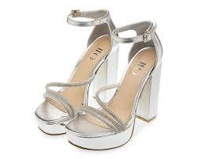
Tacoes Plateados para Mujer
Estos tacones plateados para mujer son el complemento perfecto para añadir un toque de glamour a cualquier outfit. Con un diseño elegante y sofisticado, su acabado brillante captura la luz, creando un efecto deslumbrante en cada paso. Ideales para eventos formales o salidas nocturnas, ofrecen una altura cómoda que estiliza la figura sin comprometer el confort. Su estilo versátil permite combinarlos fácilmente con vestidos o conjuntos más atrevidos, aportando siempre un aire chic y moderno. Estos tacones plateados son la opción ideal para destacar con elegancia y confianza.
Comprar Ahora $49.99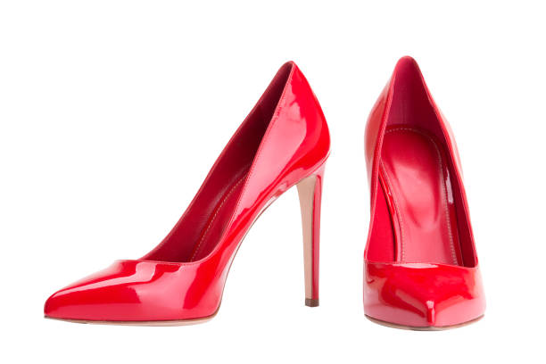
Tacones Rojos
Tacones rojos para mujer, el complemento perfecto para elevar tu estilo. Con un diseño elegante y audaz, estos zapatos destacan por su acabado brillante y su altura que alarga las piernas. La plantilla acolchada asegura comodidad durante todo el día, mientras que el tacón estilizado añade un toque de sofisticación. Ideales para noches especiales, citas o eventos, estos tacones son una declaración de confianza y glamour. Combínalos con un vestido negro o unos jeans ajustados y atrévete a brillar. ¡Un must-have para tu colección de calzado!
Comprar Ahora $65.99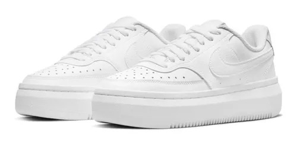
Zapatillas Nike AF1 para Mujer
Zapatillas Nike Air Force 1 blancas para mujer, un clásico atemporal que combina estilo y comodidad. Con su icónico diseño de cuero suave, estas zapatillas ofrecen una apariencia limpia y versátil, perfecta para cualquier ocasión. La suela de goma proporciona una tracción excelente, mientras que la plantilla acolchada garantiza comodidad durante todo el día. Su estética minimalista se adapta fácilmente a looks casuales o más elaborados. Ideal para dar un toque deportivo a tu outfit sin sacrificar el estilo. ¡Un imprescindible en tu colección de calzado!
Comprar Ahora $98.99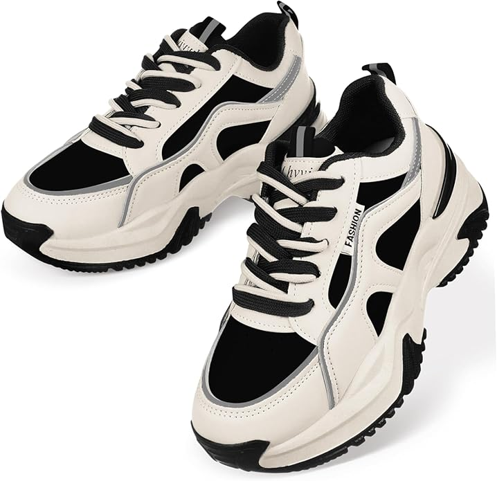
Zapatillas Blanco con Negro Deportivas para Mujer
Zapatillas deportivas blancas con negro para mujer, la combinación perfecta de estilo y funcionalidad. Con un diseño moderno y dinámico, estas zapatillas destacan por su parte superior de malla transpirable que asegura confort y ligereza. Los detalles en negro añaden un toque elegante y distintivo. La suela de goma ofrece una tracción excepcional, ideal para entrenamientos o paseos casuales. Su amortiguación proporciona soporte en cada paso, haciendo que sean perfectas para el día a día. Versátiles y chic, son un must-have para cualquier amante del deporte. ¡Dale un impulso a tu estilo activo!
Comprar Ahora $48.99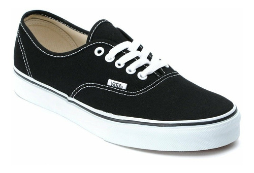
Vans Negros para Mujer
Zapatillas Vans para mujer, un ícono del estilo urbano y casual. Con su diseño clásico de lona y suela de goma, ofrecen durabilidad y comodidad en cada paso. Disponibles en una variedad de colores y estampados, estas zapatillas son perfectas para expresar tu personalidad. Su perfil bajo se adapta a cualquier outfit, desde jeans hasta vestidos. La plantilla acolchada asegura un ajuste cómodo durante todo el día, ideal para paseos o actividades diarias. ¡Un esencial en el armario de cualquier amante de la moda!
Comprar Ahora $97.99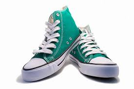
Converse Aqua para Mujer
Zapatillas Converse aqua para mujer, una opción fresca y vibrante que destaca en cualquier look. Con su icónica silueta de caña alta, estas zapatillas combinan estilo clásico y un color atractivo que añade un toque divertido. Fabricadas en lona resistente, ofrecen comodidad y transpirabilidad. La suela de goma proporciona tracción y durabilidad, perfecta para el uso diario. Ideales para combinar con jeans, shorts o vestidos, son versátiles y perfectas para cualquier ocasión. ¡Un must-have para darle vida a tu colección de calzado!
Comprar Ahora $100.99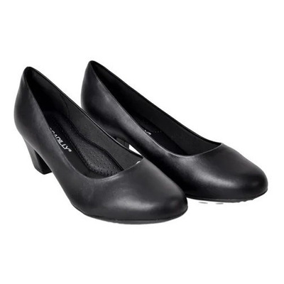
Zapatillas Negras para Mujer
Zapatillas formales negras para mujer, la fusión perfecta entre elegancia y comodidad. Diseñadas con un acabado sofisticado en material sintético o cuero, estas zapatillas ofrecen un estilo pulido ideal para ocasiones especiales o ambientes de trabajo. Su plantilla acolchada asegura confort durante todo el día, mientras que la suela antideslizante proporciona estabilidad en cada paso. Perfectas para combinar con vestidos, faldas o pantalones de vestir, son una opción versátil que añade un toque moderno a cualquier atuendo. ¡Un básico imprescindible en el armario de la mujer contemporánea!
Comprar Ahora $43.99